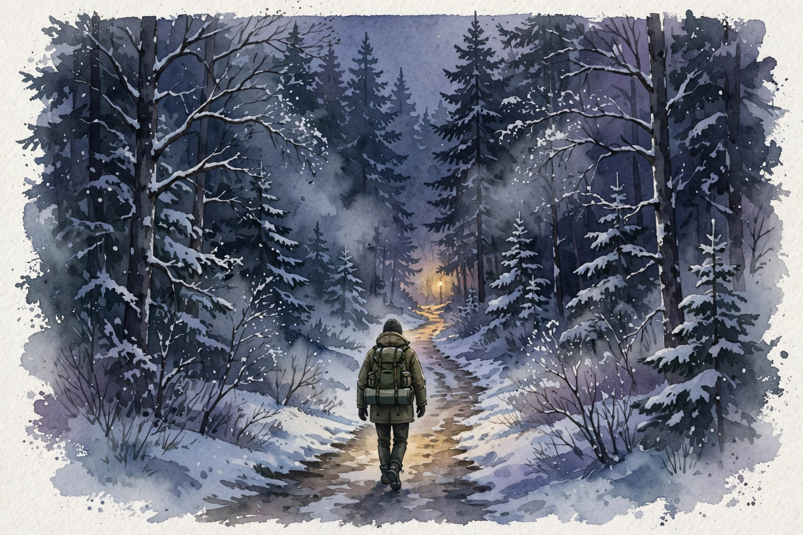
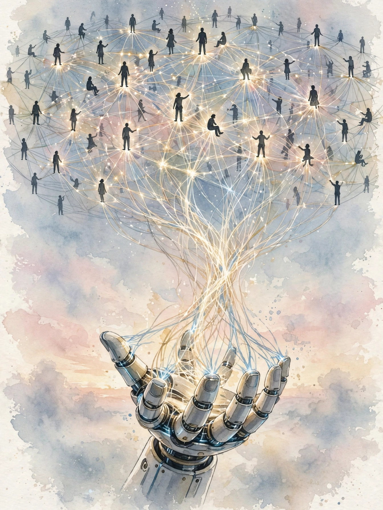

Huberman Lab · Episode 2 · Companion
Conflict, Purpose and Drive
Days after returning from Ukraine, Lex Fridman talks about generational hate, information war, and the leadership signal of staying, then lays out his company plan: a social network that trains the robots of the future. This companion follows the conversation in order.

Illustration. Miles to go: the traveler chooses the path over the comfort of the woods. Made for this page. AI-generated watercolor in a New Yorker style, made for this page. It carries no words or labels.
Watch. The official episode video on youtube-nocookie, the only external dependency on this page. Use the chapter menu above to jump to any section of this companion as you listen.
The Wisdom Index: every nugget in this companion
Opening section
War creates generational hate
SOURCE Lex went to Ukraine in 2022, days before this recording, because half his family is from Ukraine and half from Russia. His core observation: war's second-order effect is generational hate. People think war kills soldiers and civilians. They do not think about what lasts decades: anyone who lost a father, mother, daughter, or son now hates not just the soldiers or the leaders, but the entire people.
SOURCE The episode’s wording is that “hate generalizes.” Lex asked people in Ukraine whether they could ever forgive Russia. Most said no, they will never forgive. The generalization extends to all Russians, including those who did nothing, because doing nothing reads as complicity.
SOURCE The mechanism Lex describes is a spiral. Hate escalates like a drug. People who feel it often know they should not feel it and cannot help it. They know love would help everyone, and they feel the hate anyway.
Nugget 1 · Conflict
Hate generalizes
What happened. In Ukraine, Lex heard the same answer everywhere: forgiveness is off the table, and the blame covers the whole people, not just the army. Loss is personal. Blame is easy. The two combine into collective hate.
Why it matters. Generational hate outlives the war that made it. It becomes the cause of the next war. Anyone who wants to end conflict must treat the generalization, not just the fighting.
The principle. Watch for blame sliding from a specific act to a whole group. The slide is the mechanism. Name the specific act and the slide stops.
Nugget 2 · Psychology
The spiral works like a drug
What happened. Lex describes a feedback loop: loss creates hate, hate creates division, division creates more loss. People inside the loop often know they should stop. They cannot.
Why it matters. Knowing the loop exists does not break it. The loop runs on feeling, not argument. Interventions must change conditions, not minds.
The principle. When you see a self-reinforcing loop, stop arguing with its outputs. Change an input: the loss, the division, or the contact between sides.
Early section
Propaganda is an information war
SOURCE Lex's second observation: in the 21st century, war is largely an information war. He saw propaganda from every side. People who use one social feed as their news source are surprised by how much misinformation exists there. Real narratives, fully manufactured, run at scale.
SOURCE His personal test: he receives hate mail from every side. To one side he is a Zelensky shill, to another a Putin shill, to another a NATO shill. The variable changes, the hate stays constant. That pattern is itself evidence that the information environment manufactures sides faster than people can think.
INTERPRETATION The episode draws the AI connection explicitly: the same recommendation machinery Lex wants for social robotics can manufacture division. The mechanism is neutral. The objective function chooses the outcome.
Nugget 3 · Information
The shill test
What happened. Lex gets accused of being a shill for every side at once. The accusations contradict each other. The contradiction is the data: no single person can serve all masters, so the environment must manufacture the sides.
Why it matters. Mutually exclusive accusations are a cheap detector for manufactured division. You do not need to adjudicate the claims. The contradiction does the work.
The principle. On any heated topic, collect the strongest accusation each side makes about the other side's messengers. If the accusations contradict each other, treat the environment as manufactured and downgrade everything in it.
Middle section
Staying as leadership
SOURCE Before the war, Zelensky had about 30 percent approval. Many Ukrainians did not like him. When Kyiv faced invasion and encirclement, every advisor, the American military, intelligence agencies, NATO, and his own staff told him to flee. He stayed.
The approval math of the stay decision
About 30 percent approval before the invasion means about 70 percent did not approve. Worked arithmetic: 100 minus 30 equals 70.
Source: episode transcript, middle section. The 30 percent figure is Lex’s wording for the pre-war approval rate. The 70 percent is worked arithmetic. The episode gives no post-invasion approval number. Not in source.
SOURCE Lex treats staying as the signal that held everything together: universities, science, infrastructure, the road and food supply. The decision was legible to everyone. A leader who stays when exit is advised creates a coordination point that no speech can create.
SOURCE Early in the war, Ukraine gave guns to everybody, semi-automatics, and released prisoners because no staff remained to run the prisons. Lex frames it as a natural experiment: with everyone armed and the police weakened, would crime explode? Crime went to zero. Lex's interpretation: it was not hate unifying people, it was love of country and love of community. He calls it an interesting lesson from one particular case in one particular moment in human history, and does not generalize it further.
Nugget 4 · Leadership
Staying is the signal
What happened. A 30-percent-approval leader ignored every authority telling him to flee and stayed in an encircled capital. The stay was visible to the whole country and became the point around which the state kept functioning.
Why it matters. Costly, visible, irreversible choices coordinate people. Speeches do not. The cost is what makes the signal credible: fleeing was the safe advised option, staying risked death.
The principle. When you need coordination, make one costly commitment in public and do not reverse it. Watch everyone else align around it.
Nugget 5 · Honesty
One moment, not a policy
What happened. Crime went to zero in one city, in one war, in one moment, after everyone was armed. Lex reports it as a lesson from that moment only. He refuses to turn it into a general claim about guns and crime.
Why it matters. A striking single case tempts everyone to generalize. The honest move is to hold the boundary: this happened here, then, under these conditions. Nothing more is licensed.
The principle. When a vivid case tempts you to a general rule, write down the exact conditions first. If the rule needs different conditions, you do not have a rule. You have a story.
Middle section
The company is the lab
SOURCE The AI core of this episode is Lex's unlaunched company. The ultimate dream is the same as episode 1: robots in every home, companions, not servants. The short-term path is less obvious: launch a social media company first.
SOURCE The reasoning Lex gives: the algorithms that fuel effective social robotics are the same algorithms that run a social network that actually connects people. A social media company that optimizes for deep human connection instead of engagement would develop exactly the machinery social robots need: models of individuals, of relationships, of what brings people together.

Illustration. The feed pays for the robot: connection algorithms trained on human togetherness, transferred to social robotics. AI-generated watercolor in a New Yorker style, made for this page.
SOURCE Lex describes his pull toward robots as a calling. He cannot fully convert it into words. The test he uses: when he first interacted with sophisticated robots, he saw magic and looked around to check whether anyone else saw it. It felt like falling in love and wondering whether anyone noticed the person who walked into the room.
SOURCE The honest part: there is no track record proving he would be good at building this. The feeling exists without data. He trusts it anyway and names it as a gut feeling he usually does not speak about. He also notes the field's gap: the best roboticists in the world do not work on social connection. They avoid humans entirely. The big tech companies' closest product is a voice assistant that tells the weather.
Nugget 6 · Strategy
The company is the lab
What happened. Instead of building robots directly, Lex plans a social media company first. The feed trains the connection models. The models become the robots. The revenue funds the dream.
Why it matters. Building robots directly gives you no data on human connection at scale and no revenue engine. The indirect path solves both: the product is the research lab.
The principle. When the direct path lacks data and funding, find the adjacent business that generates both as a byproduct. Build that first.
Nugget 7 · Conviction
A calling without data
What happened. Lex admits he has no track record proving he can build the robot company. The pull is a feeling he cannot convert into words. He trusts it anyway and says so in public.
Why it matters. Most founders hide the gap between conviction and evidence. Naming it does not weaken the conviction. It prices it honestly, which is what lets others decide whether to follow.
The principle. State the feeling and the missing data in the same breath. Conviction without evidence is a bet. Say it is a bet.
Late section
Advice for your twenties
SOURCE From more than 10,000 audience questions, Lex picks the career question. His advice: in your twenties, find one thing you are passionate about and work harder at it than you worked at anything else in your life. If it destroys you, it destroys you. Sacrifice toward the thing you care about.
SOURCE Then the correction he adds: this advice fits engineering disciplines, especially programming. In computer science, the grind often produces great work. He names the archetype: the programmers who drink soda, eat pizza, and code 18 hours a day, like John Carmack. In other disciplines, clarity of thinking and great ideas matter more than hours, and the grind does not produce great work.
The grind, annualized
18 hours a day, every day, is 6,570 hours a year. The popular 10,000-hour figure arrives in about 1.5 years at that pace. Both figures are worked arithmetic from the episode's number.
Source: episode transcript, late section. The 18-hour figure is the episode’s number. The episode does not cite the 10,000-hour figure. The annualization and the 1.5-year result are worked arithmetic by this companion.
Nugget 8 · Work
Match the work style to the discipline
What happened. Lex gives the grind advice, then immediately limits it. Hours produce great work in programming. In idea-driven fields, clarity beats grind. The same intensity that builds a programmer destroys a thinker.
Why it matters. Generic hustle advice ignores the production function of the field. Applied to the wrong discipline, the grind burns the exact resource the work needs: clear thought.
The principle. Before choosing an intensity, ask what the field rewards: hours or insight. Then protect the rewarded input and ration the other.
Closing section
Miles to go

Photograph. Lex Fridman. Real photograph, Lex Fridman Podcast artwork, via stuff.tv. Used with source attribution. This is not an AI-generated image.
SOURCE Lex noticed the morale and ferocity of Ukrainian soldiers and drew a lesson about courage. Bravery is not just a trait. Training enables you to be brave. The intensity of the fighting revealed something Lex, who describes himself as mostly anti-war, did not expect to learn: seeing what it takes to protect sovereignty changed his view of when force is necessary.
SOURCE Lex closes with the Robert Frost poem he returns to in dark moments. His reading: the woods are death, comfort, the easy exit. The man chooses to live. Promises to keep is the reason.
The woods are lovely, dark and deep, but I have promises to keep, and miles to go before I sleep, and miles to go before I sleep.
Robert Frost, recited by Lex Fridman in the closing section
Nugget 9 · Courage
Training enables bravery
What happened. Watching Ukrainian soldiers, Lex revised his model of courage. Bravery looked less like a trait people have and more like a capacity that training builds.
Why it matters. If bravery is a trait, you wait to feel brave. If training enables it, you prepare before you need it. The second model gives you something to do on ordinary days.
The principle. Do not ask whether you are brave enough for the hard thing. Ask whether you trained for it. Then train.
Nugget 10 · Endurance
Miles to go
What happened. In his darkest moments, Lex returns to Frost: the woods are lovely, dark and deep, the easy exit, and the man chooses to keep his promises and keep walking.
Why it matters. A memorized poem is a portable decision procedure. When thinking fails, the rehearsed line chooses for you: keep the promises, cover the miles.
The principle. Pick the text you will need in the dark and memorize it in the light. Endurance is a decision you make before you need it.
Takeaways
- War's longest effect is not the destruction. It is generational hate: loss attaches blame to the whole group, and the hate outlives the fighting by decades.
- When accusations from opposing sides contradict each other, you face a manufactured information environment. Check what you know firsthand. It will be less than you thought.
- A costly, visible, irreversible choice coordinates everyone watching. Zelensky's stay held a country together. The mechanism scales down to teams.
- Lex's company plan: build the social network first, because connection algorithms are the same machinery social robots need. The feed pays for the robot.
- Match work intensity to the discipline. Grind wins in programming. Clarity wins in idea-driven fields. The wrong style in the wrong field destroys the worker.